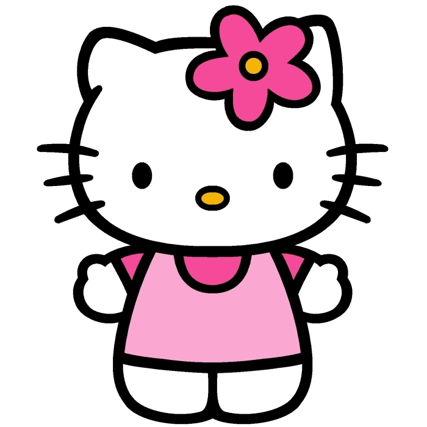

gatos famosos
SOCKS
era el gato del ex presidente de los Estados Unidos, Bill Clinton.
Uno de los animales de compañía más influyentes del momento que
vivió en la Casablanca y se colaba en algunos de los actos públicos
del presidente. Socks murió el 20 de febrero de 2009 tras un
diagnóstico de cáncer, por el que sus dueños decidieron aplicarle la
eutanasia.
GARFIELD
Mascota de Jon Arbuckle junto con Odie, Garfield es un gato que le
robó el corazón a muchos jóvenes que crecieron en la década de los
90. La caricatura proviente del cómic de Jim Davis
SALEM
Más de uno recuerda la serie 'Sabrina, la bruja adolescente' sólo
por el personaje de su gato parlante, que no perdía oportunidad para
tirar comentarios sarcásticos sobre la vida amorosa de la bruja,
política norteamericana o casi cualquier otro tema.
SILVESTRE
Es probablemente el gato más famoso del mundo y todos le reconocen
por la frase: «¿Has visto a un lindo gatito?
BOLA DE NIEVE
Snowball I, Snowball II, Snowball III, Coltrane y Snowball V son
cinco gatos ficticios que han pertenecido a Lisa Simpson en la serie
de televisión Los Simpson.
HELLO KITTY
es una marca y personaje ficticio producido por la compañía japonesa
Sanrio y que ha sido durante mucho tiempo la más popular de esta
compañía. Fue diseñada por Yuko Shimizu y el primer producto, se
lanzó en Japón en 1974 y en los Estados Unidos en 1976.23 Tras el
primer diseño realizado por Shimizu, Yuko Yamaguchi se convirtió en
la diseñadora oficial de Hello Kitty y lleva más de veinte años
diseñando todo tipo de productos, accesorios y complementos de Hello
Kitty.

GATO CON BOTAS
Es un gato que lucha como un mosquetero, aunque lo que más se
caracteriza de él son sus botas, que es lo que le dan nombre. Nació
en España. Poniendo una cara triste puede conseguir todo lo que
quiere, haciendo que los demás le vean como un "minino indefenso".
GATO CHESHIRE
Si te has preguntado por el gato de Alicia en el país de las
maravillas y su nombre, te confirmamos que, además de ser conocido
como gato de Cheshire (por este condado de Inglaterra), es
identificado como gato sonriente o gato risón. Son los sobrenombres
que se le han puesto en las versiones latinoamericanas de las
aventuras de Alicia. ¿Qué tiene de especial este gato? Aparte de una
amplísima sonrisa, su capacidad para aparecer y desaparecer. Incluso
puede llegar a dejar visible solo la cabeza o la sonrisa.